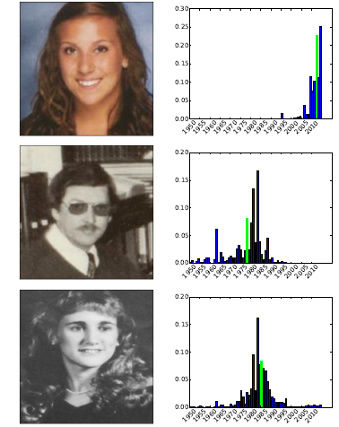
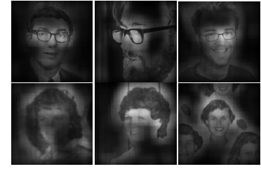
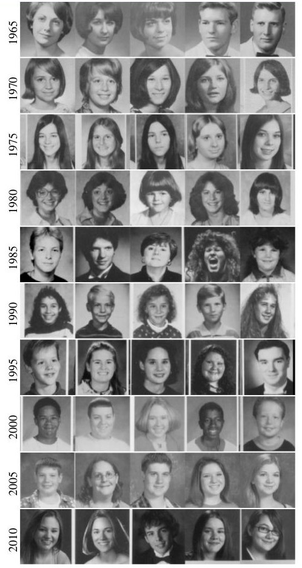

Analyzing Human Appearance as a Cue for Dating Images
Abstract:
Given an image, we propose to use the appearance of people in the scene to estimate when the picture was taken. There are a wide variety of cues that can be used to address this problem. Most previous work has focused on low-level image features, such as color and vignetting. Recent work on image dating has used more semantic cues, such as the appearance of automobiles and buildings. We extend this line of research by focusing on human appearance. Our approach, based on a deep convolutional neural network, allows us to more deeply explore the relationship between human appearance and time. We find that clothing, hair styles, and glasses can all be informative features. To support our analysis, we have collected a new dataset containing images of people from many high school yearbooks, covering the years 1912-2014. While not a complete solution to the problem of image dating, our results show that human appearance is strongly related to time and that semantic information can be a useful cue.People:
-
University of Kentucky
- Nathan Jacobs
- Tawfiq Salem
- Scott Workman
- Menghua Zhai
Highlights:
-

- From Human Appearance to Year
We take a discriminative approach to learn the relationship
between human appearance and the year. Specifically, we learn to predict the year an image was captured using a
deep convolutional neural network (CNN). We train three different color-based networks face2year, torso2year, and patch2year,
and also we train additional three grayscale_based networks gray_face2year, gray_torso2year, and gray_patch2year
by replacing the color input images with grayscale images.

To better understand what our networks have learned, we perform a form of sensitivity analysis that highlight regions of the image (unoccluded) that have the largest impact on the predicted distribution over years. Occluded image regions have little impact on the prediction.- Image Dependent Sensitivity Analysis

We evaluated the quantitative and qualitative properties of our trained models. In one of our experiments, we found for every fifth year the five individuals with the most confident predictions to be from that year. For example, the top row int he figure at the right contains three women and two men for which the network has the greatest confidence that they are from 1965. The trained networks seems to have identified differences in shirt collars and hair styles that are typical of the respective eras.- Quantitative Evaluation
Related Papers
- Analyzing Human Appearance as a Cue for Dating Images (Tawfiq Salem, Scott Workman, Menghua Zhai,Nathan Jacobs), In IEEE Winter Conference on Applications of Computer Vision (WACV), 2016.
Bibtex:
@inproceedings{salem2016face2year,
author = {Salem, Tawfiq and Workman, Scott and Zhai, Menghua and Jacobs, Nathan},
title = {Analyzing Human Appearance as a Cue for Dating Images},
booktitle = {{IEEE Winter Conference on Applications of Computer Vision (WACV)}},
year = {2016},
annotation = {geofaces,contextualeyes},
pages = {1--8}
}
Dataset:
In our dataset, we have in total 719 229 images of face patches, and 565 069 images of torso patches. Please contact us by email to receive access to the database.Models:
face2yeartorso2year